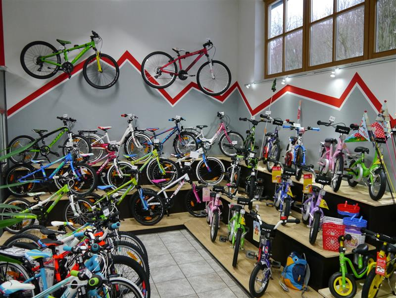

Dein Weg zählt.
Alltag, Tour oder sportliches Ziel: Wir besprechen, wie du unterwegs bist und was dir an deinem Rad wichtig ist.
Ein Familienbetrieb. Eine gemeinsame Leidenschaft.
Und Zeit für das, was dich bewegt.
Jeder Mensch fährt anders. Deshalb steht bei uns zuerst eine Frage im Mittelpunkt: Was passt zu dir?
Wir sind ein Familienbetrieb am nördlichen Ortsrand von Taufkirchen (Vils). Die Freude am Fahrrad und an der Bewegung möchten wir dir mit auf den Weg geben – mit fachkundiger Beratung und einem Rad, das zu deinen Anforderungen passt.
Vom ersten Kinderrad bis zum sportlichen Begleiter nehmen wir uns Zeit für deine Wünsche. Und bei einer Probefahrt kannst du selbst herausfinden, wie sich dein Wunschrad anfühlt.

Ein gutes Fahrrad ist der Anfang. Die Betreuung danach gehört für uns genauso dazu.
Alltag, Tour oder sportliches Ziel: Wir besprechen, wie du unterwegs bist und was dir an deinem Rad wichtig ist.
Unsere Fachkräfte erklären dir die Unterschiede und unterstützen dich bei der Auswahl und Anpassung deines Fahrrads.
Unsere Fachwerkstatt übernimmt Reparaturen, Inspektionen und Zubehörmontage. Wir bleiben dein Ansprechpartner.

Ein Blick ins Geschäft, ein Gespräch über dein nächstes Rad oder eine Frage an die Werkstatt – komm gerne unverbindlich vorbei.